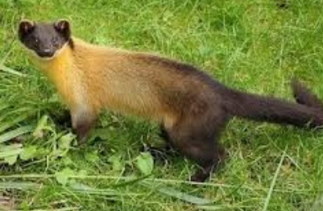

(백엔드 애들이 받아올 사용자 아이디)님 로그아웃

· 이름 : 담비(Marten)
· 수명 : 15년
· 크기 : 35~60cm
· 먹이 : 오소리, 작은 초식동물, 나무열매 등
· 서식지 : 삼림지대
· 부연 설명 : 담비속에 속하는 동물 중에서 가장 크고, 몸통은 가늘고 길며 꼬리는 몸통 길이의 2/3 정도로 매우 길다.
담비는 활엽수림에는 서식하지 않고 숲이 울창하여 통과하기 어려운 침엽수림에서만 2-3마리씩 무리 지어 서식한다.
나무를 잘 타고 땅 위를 잘 달리기 때문에 천적을 잘 피하며, 무리 지어 다니면서 자기보다 강한 오소리를 습격하기도 한다.
작은 초식동물이나 설치류, 파충류, 나무열매 등을 먹는다.
· 수명 : 15년
· 크기 : 35~60cm
· 먹이 : 오소리, 작은 초식동물, 나무열매 등
· 서식지 : 삼림지대
· 부연 설명 : 담비속에 속하는 동물 중에서 가장 크고, 몸통은 가늘고 길며 꼬리는 몸통 길이의 2/3 정도로 매우 길다.
담비는 활엽수림에는 서식하지 않고 숲이 울창하여 통과하기 어려운 침엽수림에서만 2-3마리씩 무리 지어 서식한다.
나무를 잘 타고 땅 위를 잘 달리기 때문에 천적을 잘 피하며, 무리 지어 다니면서 자기보다 강한 오소리를 습격하기도 한다.
작은 초식동물이나 설치류, 파충류, 나무열매 등을 먹는다.